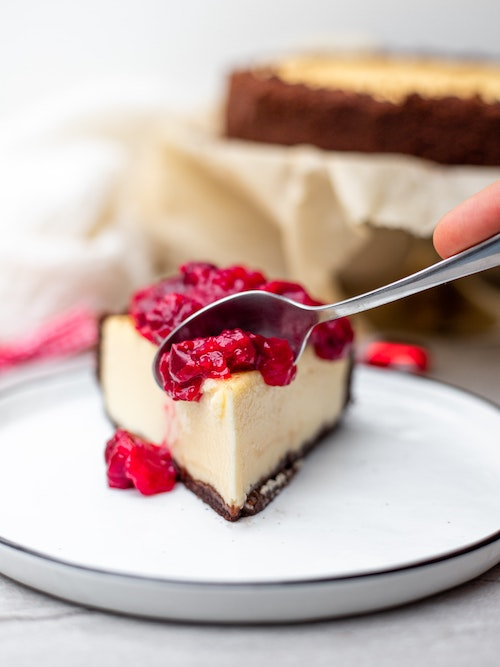

クリーミーな絶品濃厚チーズケーキのレシピ✨混ぜて冷やすだけで簡単に作れます。
(直径18cm丸型1個分)| 材料名 | 量 |
|---|---|
| ビスケット | 80g |
| バター | 40g |
| クリームチーズ | 200g(常温に戻す) |
| ★粉ゼラチン | 5g |
| ★お湯 | 30ml |
| 砂糖 | 70g |
| プレーンヨーグルト | 200ml |
| レモン汁 | 小さじ1 |
| バニラエッセンス | 少々 |
| 1 | 2 | 3 | 4 | 5 | 6 |
|---|---|---|---|---|---|
| ビスケットをビニール袋に入れて砕く。 | バターを溶かし、２に混ぜて型に敷き詰める。 | ★を混ぜ、少し置く。 | クリームチーズと砂糖、ヨーグルト、レモン汁、バニラエッセンスを泡立て器で混ぜる。 | ★を加えて混ぜる。 | 型に流し入れ、冷蔵庫で3時間冷やす。 |